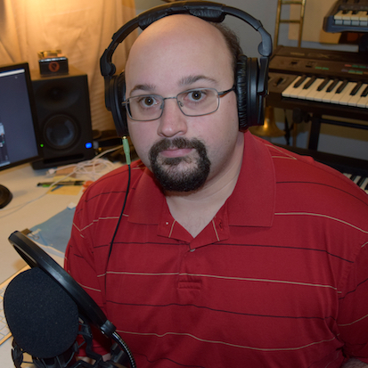

Supplemental Information: Episode 5
1.5 - Sonic Identity, Imitation, and Critical Listening in Popular Music
Matt Ferrandino (Ottawa University)
Release Date: Thursday, February 10, 2022

Producer: Megan Lyons.
Music Credits:
SMT-Pod Theme music by Zhangcheng Lu;
Closing music "hnna" by David Voss
Other original compositions by Nate Crowe, Ljudevit Laušin, and Jacob Thiede.
Bio: Matthew Ferrandino is currently a part-time lecturer at Ottawa University (in Ottawa, KS) where he teaches courses in music theory and popular music. Matthew holds a PhD in music theory from the University of Kansas where he completed his dissertation A Narratology of Music Video in 2021. His research focuses on the analysis of popular music and has been published in Music Theory Online, SMT-V, and Intégral.
Keywords: Popular music, listening, timbre, culture, sound studies